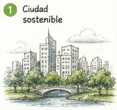
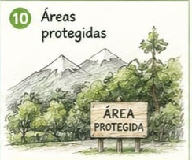
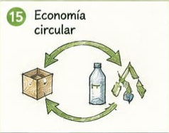
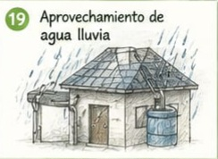
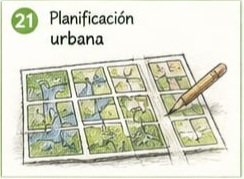
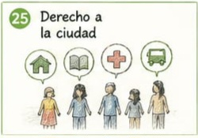

Tiempo de observación
Los jugadores tendrán 30 segundos para observar todas las cartas e intentar memorizar su ubicación.
Ciudades sostenibles
Un juego virtual de memoria que convierte conceptos de sostenibilidad urbana en una experiencia visual, colaborativa y significativa.
Conocer la dinámica ↓





La propuesta
“Juego de Memoria – Ciudades Sostenibles” es un recurso didáctico virtual, diseñado para trabajar contenidos de sostenibilidad urbana. El juego se desarrolla en una página web independiente, donde las cartas digitales se organizan en parejas para activar la memoria, la asociación y la explicación.
Esta página funciona como la presentación del proyecto; no reproduce la partida. La experiencia de juego ocurre en la plataforma virtual creada para ello.
Objetivo educativo
La actividad transforma conceptos académicos en asociaciones visuales. Al buscar cada pareja, el participante activa su memoria; al identificarla y escuchar o construir su explicación, fortalece la comprensión del tema y su relación con el entorno urbano.
La idea del juego
El juego consiste en relacionar correctamente el concepto de ciudades sostenibles con su definición. Cada pareja está formada por dos cartas que tienen la misma imagen: una contiene el nombre del concepto y la otra contiene su definición. Por eso no basta con tener buena memoria; también hay que saber qué significa cada tema.
Los jugadores tendrán 30 segundos para observar todas las cartas e intentar memorizar su ubicación.
Después de los 30 segundos, todas las cartas quedarán ocultas.
En cada turno se selecciona una carta con el concepto y una con la definición. Solo forman pareja si corresponden al mismo concepto y tienen la misma imagen.
Si el concepto, la definición y la imagen coinciden, el jugador gana 1 punto y la pareja queda descubierta.
Si el concepto, la definición o la imagen no corresponden, las cartas se ocultan de nuevo y pasa el turno al siguiente jugador.
Los jugadores deben recordar la ubicación de las cartas y las imágenes, conceptos y definiciones que hayan aparecido.
Los demás jugadores no pueden indicar la respuesta correcta ni revelar la ubicación de las cartas.
Cada jugador tiene una oportunidad por turno para intentar encontrar una pareja.
Una experiencia virtual
Las 30 cartas virtuales se presentan en una cuadrícula dentro de la página del juego. Al inicio, el participante observa las imágenes, los conceptos y la ubicación de cada carta.
Después del tiempo de observación, las cartas se ocultan. Cada participante selecciona dos cartas virtuales para encontrar una pareja vinculada al mismo concepto.
Cuando se forma una pareja, se presenta el tema con el apoyo de sus palabras clave. Si no coincide, las cartas se ocultan de nuevo y continúa el turno.
Estructura de cada pareja
Cada pareja virtual se construye con la misma imagen representativa. Una carta nombra el concepto; la otra conserva la imagen e incorpora palabras clave o una breve explicación.
Carta virtual A
Carta virtual B
Red de espacios naturales que proveen servicios ambientales.
Las 60 parejas —30 cartas virtuales en total— desarrollan asociaciones visuales basadas en los 30 temas seleccionados.
Contenido académico
Estos son los 30 conceptos visuales y definiciones incluidos en el glosario actual del juego.
Valor pedagógico